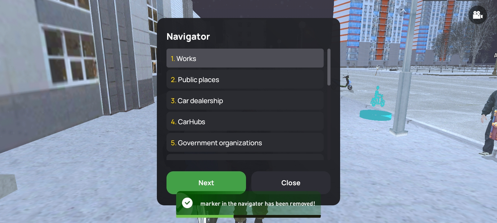

Início
Redes Sociais

GPS-Navegador
1. Trabalhos
1. Refinaria de petróleo (Trabalho inicial)
2. Serraria (Trabalho inicial)
3. Fábrica de móveis (Trabalho inicial)
4. Motorista de ônibus
5. Entregador de comida
6. Mina
7. Estação de mecânicos
8. Motorista de caminhão de lixo
9. Caminhoneiro
10. Coletor de dinheiro
11. Ladrão de veículos
12. Mergulhador
13. Ladrão de casas
2. Locais públicos
1. Autoescola
2. Recrutamento militar
3. Moscow-City
4. Rodoviária Batyrëvo
5. Rodoviária Arzamas
6. Parque Arzamas
7. Igreja
8. Cais
9. Escola de aviação
3. Concessionárias de veículos
1. AutoHaus (Classe Premium)
2. ArzamasCars (Classe Média)
3. AutoDvor (Classe Econômica)
4. MotoStyle (Classe Moto)
5. Mercado de Aviação
6. Mercado de carros usados
7. Mercado de carros
8. Estacionamento Arzamas
9. Estacionamento Yuzhny
4. Pistas de decolagem
(Sem subcategorias)
5. Autohubs
1. AutoHub(91)
2. AutoHub(92)
3. AutoHub(93)
4. AutoHub(94)
5. AutoHub(95)
6. AutoHub(96)
7. AutoHub(97)
8. AutoHub(98)
9. AutoHub(99)
10. AutoHub(100)
11. AutoHub(101)
12. AutoHub(102)
13. AutoHub(103)
14. AutoHub(104)
15. AutoHub(105)
16. AutoHub(106)
17. AutoHub(107)
18. AutoHub(108)
19. AutoHub(109)
20. AutoHub(110)
21. AutoHub(111)
22. AutoHub(112)
23. AutoHub(113)
24. AutoHub(114)
25. AutoHub(115)
26. AutoHub(116)
6. Organizações governamentais
1. Governo
2. FSB
3. Exército
4. Ministério do Interior Arzamas
5. Trânsito Yuzhny
6. Ministério de Emergências da Rússia
7. Hospital Arzamas
8. Hospital Yuzhny
9. RGTRK Ostankino
10. TRK Ritm
7. Estruturas criminosas
1. Tambov OCG
2. Ostryye Kozyrki
3. Izmailovo OCG
4. Reais Garotos
5. Toca
6. Mercado negro
7. Guerra pelos negócios
8. Bancos
1. Banco Arzamas
2. Banco Yuzhny
3. Banco Batyrëvo
4. Banco Litvagrad
5. Oficina de impressão
9. Locais próximos
1. Encontrar loja 24/7 mais próxima
2. Encontrar loja de roupas mais próxima
3. Encontrar loja de acessórios mais próxima
4. Encontrar clube mais próximo
5. Encontrar caixa eletrônico mais próximo
6. Encontrar posto de gasolina mais próximo
7. Encontrar lanchonete mais próxima
8. Encontrar loja de armas mais próxima
9. Encontrar loja de jardinagem mais próxima
10. Hotéis
38. Hotel classe econômica
39. Hotel classe elite
40. Hotel classe média
78. Hotel classe econômica
11. Empresas de transporte
1. TC Garel
2. TC Batyrëvo
3. TC Lytkarino
12. Estações de manutenção
1. Oficina mecânica
2. Balanceamento de pneus
3. Centro de estilização
4. Centro de tuning
13. Entretenimento
1. Duelo
2. Clube
3. Cassino
4. Zoológico
5. Centro de jogos
6. Masmorra
7. Batalha pelo container da família (VCH)
8. Batalha pelo container da família (ZZ)
9. Leilão de containers
10. Reserva natural
11. Píer (Pesca)
12. Captura da bandeira (Fazenda 2)
14. Negócios
1. Posto de gasolina
2. Loja de roupas
3. Loja de acessórios
4. Loja de armas
5. Lojas 24/7
6. Lanchonetes
7. Loja do Mago
8. Lojas de eletrônicos
9. Mercado central
10. Abrigo de animais
11. Loja de pesca
12. Loja de mergulho
15. Complexo de estufas
1. Loja Jardim-Cidade
2. Loja de madeira
3. Loja de vidro
4. Loja de ferragens
5. Loja atacadista Garel
6. Loja atacadista Batyrëvo
7. Loja atacadista Lytkarino
16. Complexo agrícola
1. Fazenda de feno
2. Anashan (venda de produtos agrícolas)
3. Taiga (coleta de madeira)
4. Fábrica de móveis (venda de madeira)
17. Escritório de companhias aéreas
1. Escritório de companhias aéreas